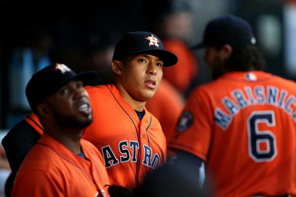

Alonso's 3-run homer gives Athletics 7-4 win over Astros
Posted On April 30th, 2016
OAKLAND, Calif. - Yonder Alonso hit a game-winning three-run homer to lift the Oakland Athletics to a 7-4 win over the Houston Astros on Friday night.
Stephen Vogt doubled to left center leading off the ninth off reliever Tony Sipp (0-1). After Coco Crisp was intentionally walked, Alonso homered to right off reliever Pat Neshek.
The Astros, who were expected to contend for the divisional title, lost for the eighth time in 10 games. They entered Friday tied for the league's worst record and haven't won consecutive games this season
Ryan Madsen (1-0) pitched a scoreless ninth for Oakland. He was the fifth A's pitcher on the night. Sean Manaea, a hard-throwing left-hander acquired from the Royals last season in the Ben Zobrist trade, allowed four runs on four hits and four walks in five-plus innings. He had three strikeouts and hit a batter in his major league debut.